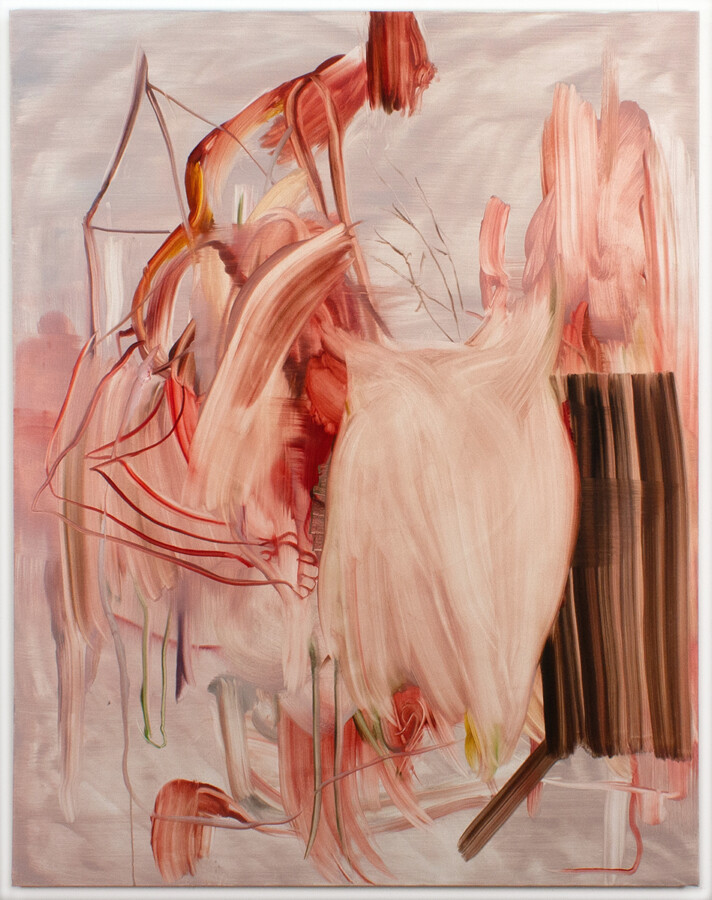

Larissa Borteh: In the Wind
There is a kind of energy that doesn’t announce itself, it simply arrives, exerting its presence on anything that moves near, against, or through it. This force — physical, restless, and uncontainable — animates In the Wind, the debut solo exhibition of new paintings by Chicago artist Larissa Borteh. The show opens with a reception for the artist on Sunday, May 3 and continues through June 13.
Borteh’s practice begins not with a plan but with a rupture. Possibly a single mark pulled from memory or an assertive gesture that breaks the stillness of an empty canvas. From there, the work accelerates. She moves quickly and fluidly allowing each signal to beget the next in a process that is at once intuitive and rigorous. The paintings that result are environments poised at the threshold of collapse: chaotic but held together by the internal logic of bodily motion.
In the Wind takes its title from a sensation that is both literal and metaphysical. Borteh describes riding her bicycle into a headwind — the effort of simply moving forward against invisible resistance. This image concentrates everything the paintings are about: daily life experienced as constant negotiation with forces that do not yield. Forms are thrust together or torn from their moorings entirely. What might begin as visual clues to the familiar quickly dissolve into the space around them, distressed by change, uncertain of their own coherence.
At the center of this work lies gesture — not simply as a formal strategy, but as a primal impulse to express through pressure, trajectory and movement. This impulse unfolds in the many ways the body articulates its most salient actions: through running, falling, sinking, collapsing, and, in turn, through recovery and ascension. These states do not exist in isolation; they coexist within a space of uneasy suspension, where motion is both continuous and unresolved. Underpinning it all is a sense of polarity, as well as the act of recalling the body’s visceral passage through time and space — a fragile thread that holds these shifting experiences together.
Larissa Borteh was born in Columbus, Ohio. She received a BFA from the School of Visual Arts in New York City in 2010 and an MFA from the School of the Art Institute of Chicago in 2014. Recent exhibitions include Cuff & Post, Chicago; Patient Info, Chicago; Folio, Green Bay; Julius Caesar Gallery, Chicago; Hyde Park Art Center, Chicago; Zolla Lieberman Gallery, Chicago; Andrew Rafacz Gallery, Chicago; Minotaur Projects, Los Angeles; Cranbrook Art Museum, Bloomfield Hills; The Union League Club, Chicago; Skylight Gallery, New York; and the Visual Arts Gallery, New York.
Borteh has been a recipient of the Leon Levy Foundation Grant, the George and Ann Siegel Fellowship, and a Dave Bown Projects Award. She has been an artist-in-residence at the Vermont Studio Center, Johnson, Vermont; the Association of Icelandic Visual Artists (SÍM), Reykjavik, Iceland; and Kunstnarhuset Messen, Ålvik, Norway, and she was a MacDowell Fellow.
Borteh currently lives and works in Chicago, IL, where she is an Adjunct Associate Professor at the School of the Art Institute of Chicago.